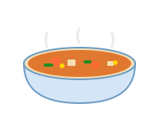

Fluffy Pancakes
Light, fluffy pancakes perfect for a weekend breakfast. Ready in 20 minutes.
Simple, timeless recipes for every home cook.
Light, fluffy pancakes perfect for a weekend breakfast. Ready in 20 minutes.

A warming, nutritious soup packed with seasonal vegetables.
This site is intentionally simple and clean. It uses:
It should be perfectly captured and replayed by any web archiving tool.